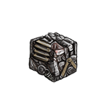

Получено: файл; исходный URL. Изображение подписано на странице-источнике; файл получен с зеркала. Совпадение с оригиналом не проверено. Страница: источник.
Металл
Мой Мир; историческая таблица, дата редакции не установлена- Тип
- нет данных
- Покупка
- 1 Зб; место покупки не указано
- Продажа
- 500 монет
- Как получить
- Где достать: Бесплатный подарок от друзей Волшебный кролик
- Применение
- Строительство (предварительно: Мой Мир; 20.06.2011)
- Особенности
- нет данных
- Версия и дата
- Мой Мир; историческая таблица, дата редакции не установлена


Данные по источнику · Мой Мир · 20.06.2011
Предварительно: один источник; требует сверки. Требуется сверка.
- Покупка
- 1 зомбаксов (по источнику)
- Продажа
- 500 монет
- Получение
- Бесплатный подарок; волшебный кролик
- Применение
- Строительство
Данные по источнику · ВКонтакте, ZOMBIA · 27 Июня 2011, 11:56; дата редакции не установлена
Предварительно: Данные одной исторической фанатской страницы; цифры и подписи изображений требуют сверки. Описание и условия сохранены по колонкам без додумывания.. Требуется сверка.
- Описание материала
- Металл 500 монет 1 Зомбакс
- Нужен в строительстве
- нет текстовых данных; возможны неподписанные изображения
- Где достать
- Бесплатный подарок. Создать в кролике
- Нужен в создании
- нет текстовых данных; возможны неподписанные изображения
Данные по источнику · браузерная социальная версия, ЗомбиСити / зеркало · дата редакции не установлена; дата в URL не гарантирует актуальность
Предварительно: Одна статья; сверка независимости и версий не завершена.. Требуется сверка.
- Цена и магазин
- Покупка 1 Зб; продажа 500 монет; указана Обменка.
- Производство
- Волшебный кролик: 1 шестерня + 500 монет → металл.
- Получение
- Бесплатный подарок друга; также ряд декораций, Бендер-сюрприз, Икебана и железный забор в подземелье.
- Применение
- Изготовление труб, проволоки, вёдер, листа золота и других материалов; строительство.
Данные по источнику · браузерная версия; платформа не указана · дата редакции неизвестна
Предварительно: Подписи и последовательность пиктограмм перенесены без автоматического толкования. Названия, цены и направления стрелок требуют визуальной сверки; возможны ошибки самого сайта.. Требуется сверка.
- Колонка 1 в порядке пиктограмм
- [подпись: Металл; файл metall.png] [подпись: Стоимость (Зомбаксов); файл zombucks.png] 1 [подпись: Продажа; файл moneta.png] 500 [подпись: Бесплатный подарок от друзей; файл podarki.png]
- Колонка 2 в порядке пиктограмм
- [значок: proizvoditsya.png] [подпись: Волшебный Кролик; файл volshebny_krolik.png]
- Колонка 3 в порядке пиктограмм
- [значок: stroit.png] [подпись: Склеп; файл sklep.png] [подпись: Зомбоящик; файл zomboyashik.png] [подпись: Бизнес-Центр; файл biznes-centr.png]
- Колонка 4 в порядке пиктограмм
- [значок: sosdanie.png] [подпись: Труба; файл truba.png] [значок: strelka.png] [подпись: Склеп; файл sklep.png] [подпись: Проволока; файл provoloka.png] [значок: strelka.png] [подпись: Маяк; файл mayak.png] [подпись: Ведро; файл vedro.png] [значок: strelka.png] [подпись: Маяк; файл mayak.png] [подпись: Шестерня; файл shesternya.png] [значок: strelka.png] [подпись: Волшебный Кролик; файл volshebny_krolik.png] [подпись: Лист золота; файл list_zolota.png] [значок: strelka.png] [подпись: Университет; файл universitet.png]
- Колонка 5 в порядке пиктограмм
Данные по источнику · браузерная Зомби Ферма / Зомби Мания; платформа требует проверки · дата URL не гарантирует дату редакции
Предварительно: Индивидуальная страница прочитана автоматически, подписи значков могут содержать ошибки; даты редакции и независимость от ЗомбиСити не установлены.. Требуется сверка.
- Основной блок страницы и подписи изображений
- Материал [иллюстрация: Металл] Металл Цена покупки: 1 [иллюстрация: Зомбаксы] Цена продажи: 500 [иллюстрация: Монеты] Купить Металли в нужном количестве можно в Обменке игры Зомби Ферма Материал Металл в игре Зомби Ферма с самого начала. Его можно дарить бесплатным подарком, не занимая лимит. Металл часто используется в производстве, но и добыть его не сложно, ведь, кроме подарков, его можно накопать, найти в яйце, превратить в специальной постройке, получить за квест, выиграть в рулетке. Металл иногда выпадает из-под хэллоуинского декора: Фонарь ночной [иллюстрация: Фонарь ночной] Фонарь ночной [иллюстрация: Фонарь ночной] Ограда простая [иллюстрация: Ограда простая] Ограда простая [иллюстрация: Ограда простая] Тыква маленькая [иллюстрация: Тыква маленькая] Тыква большая [иллюстрация: Тыква большая] Выпадает разбив яйцо или из сокровища: Бендер-сюрприз [иллюстрация: Бендер-сюрприз] Икебана [иллюстрация: Икебана] Металл можно сделать в специальной постройке: Металл [иллюстрация: Металл] = 1 Шестерня [иллюстрация: Шестерня] +500 Монеты [иллюстрация: Монеты] [иллюстрация: Стрелка] Волшебный кролик [иллюстрация: Волшебный кролик] Металл можно добыть Палочками в Подземелье: Железный забор [иллюстрация: Железный забор] Железный забор [иллюстрация: Железный забор] Металл участвует в создании других материалов: Дверь [иллюстрация: Дверь] Мир [иллюстрация: Мир] Труба [иллюстрация: Труба] Проволока [иллюстрация: Проволока] Ведро [иллюстрация: Ведро] Лист золота [иллюстрация: Лист золота] Фольга [иллюстрация: Фольга] С помощью Металла строятся многие постройки в игре: 20 Плиток [иллюстрация: 20 Плиток] Зомбоящик [иллюстрация: Зомбоящик] Школа [иллюстрация: Школа] Зомби-вертикаль [иллюстрация: Зомби-вертикаль] Пермь слева [иллюстрация: Пермь слева] Пермь справа [иллюстрация: Пермь справа] Ковёр-самолёт [иллюстрация: Ковёр-самолёт] Склеп [иллюстрация: Склеп] Бизнес-Центр [иллюстрация: Бизнес-Центр] Эйфелевая [иллюстрация: Эйфелевая] Лувр [иллюстрация: Лувр] Шаттл Tic Tac [иллюстрация: Шаттл Tic Tac] Кино [иллюстрация: Кино] Гиперсфера за зомбаксы [иллюстрация: Гиперсфера за зомбаксы] Гиперсфера за голоса [иллюстрация: Гиперсфера за голоса] Парусник [иллюстрация: Парусник] Дредноут 950 [иллюстрация: Дредноут 950] Дредноут [иллюстрация: Дредноут] Приз за выполнение квестовых заданий: Первый урожай [иллюстрация: Первый урожай] У сторожа [иллюстрация: У сторожа] Опасность [иллюстрация: Опасность] Марафон 14 [иллюстрация: Марафон 14] Металл есть в рулетках: Флаг Казахстана [иллюстрация: Флаг Казахстана] Флаг Германии [иллюстрация: Флаг Германии] Флаг Франции [иллюстрация: Флаг Франции] Флаг Кореи [иллюстрация: Флаг Кореи] Флаг Аргентины [иллюстрация: Флаг Аргентины] Флаг Мексики [иллюстрация: Флаг Мексики] Видео - Копаем Металл под Хэллоуинским декором Зомби Фермы:
Текст источника без реконструкции
Где достать: Бесплатный подарок от друзей Волшебный кролик
Связанные сущности
- Школа — упоминается в стадиях или производстве Школы